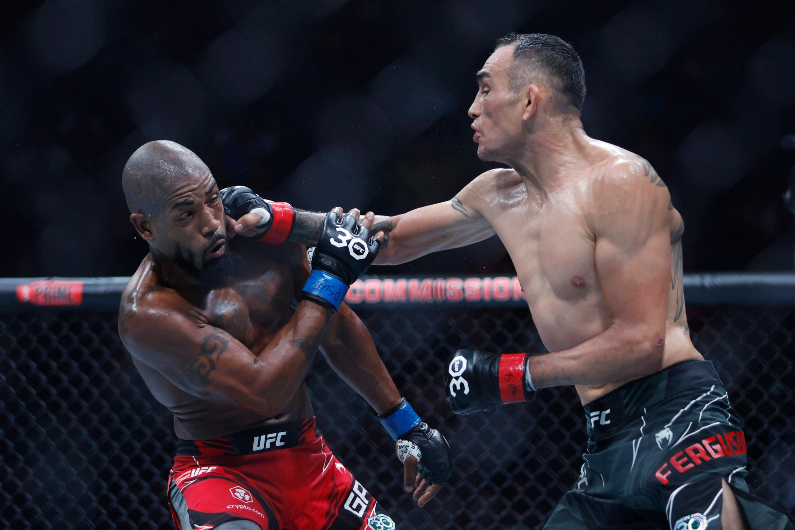

Kuvagalleria



EL CUCUY
Tony Ferguson on yksi UFC historian erikoisimmista kevytsarjan ottelijoista. Hänet tunnetaan aggressiivisesta tyylistä, spinning elboweista ja poikkeuksellisesta kestävyydestä.

Yksi UFC historian viihdyttävimmistä otteluista tapahtui UFC 229 tapahtumassa vuonna 2018.


| Tulos | Vastustaja | Tapa | Tapahtuma | Vuosi |
|---|---|---|---|---|
| Loss | Paddy Pimblett | Decision | UFC 296 | 2023 |
| Loss | Bobby Green | Submission | UFC 291 | 2023 |
| Loss | Nate Diaz | Submission | UFC 279 | 2022 |
| Loss | Michael Chandler | KO | UFC 274 | 2022 |
| Loss | Beneil Dariush | Decision | UFC 262 | 2021 |
| Loss | Charles Oliveira | Decision | UFC 256 | 2020 |
| Loss | Justin Gaethje | TKO | UFC 249 | 2020 |
| Win | Donald Cerrone | TKO | UFC 238 | 2019 |
| Win | Anthony Pettis | TKO | UFC 229 | 2018 |
| Win | Kevin Lee | Submission | UFC 216 | 2017 |
| Win | Rafael dos Anjos | Decision | UFC Fight Night | 2016 |